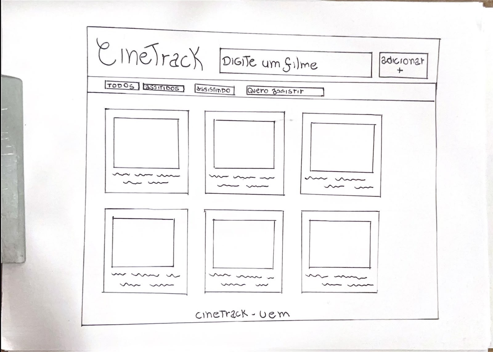

| Título | Ano | Gênero | Status |
|---|---|---|---|
| Interestelar | 2014 | Aventura, Drama e Ficção científica | Assistido |
| O Irlandês | 2019 | Crime, Drama e História | Assistido |
| Homem-Aranha: Um Novo Dia | 2026 | Ficção científica, Ação e Aventura | Quero assistir |
| Maze Runner - Correr ou Morrer | 2014 | Ação, Mistério, Ficção científica e Thriller | Assistindo |
| The Hunger Games: Amanhecer na Ceifa | 2026 | Ficção científica, Ação e Aventura | Quero assistir |
| A Odisseia | 2026 | Aventura, Ação e Fantasia | Quero assistir |
